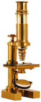

 ImageJ User Guide
IJ 1.46r
Tiago Ferreira Wayne Rasband
The ImageJ User Guide guide provides a detailed overview of ImageJ (and inherently Fiji↓), the standard in scientific image analysis (see 27: Focus on Bioimage Informatics↓). It is available as a PDF (optimized for electronic viewing), as well as printable booklets available in two formats: A4 and Letter size paper. These are two-sided booklets that can be printed on a duplex unit printer by setting the automatic duplex mode to “short edge binding”. This HTML version is also available as a downloadable ZIP archive that you can install on your hard disk for offline browsing. The source files of this guide are available through a Git version control repository at the Fiji website.
Given ImageJ’s heavy development this guide will always remain incomplete. All ImageJ users and developers are encouraged to contribute to the ImageJ documentation resources (see Getting Involved↓).
1 Conventions Used in the Guide
ImageJ commands are typed in with respective shortcut keys flanked by square brackets (e.g.: ). As explained in Using Keyboard Shortcuts↓ this notation implies shift-modifiers (i.e., means pressing Shift D , only the D key) and assumes that Require control key for shortcuts in is unchecked.
Selected Contents
- Getting Started
- Working with ImageJ
- Scripting
- User Interface
- Commands
- Community